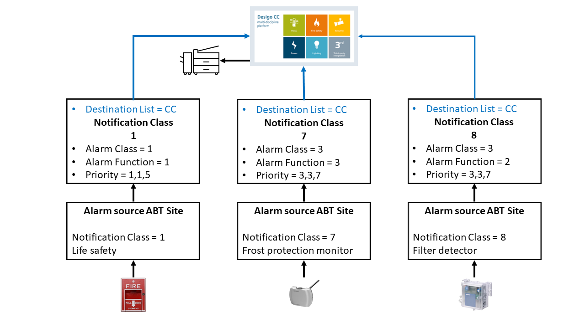
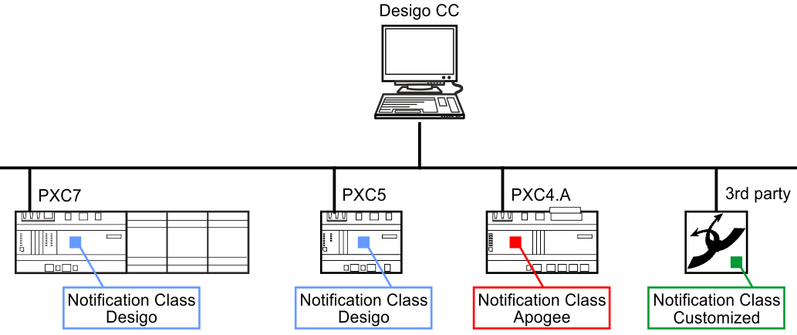
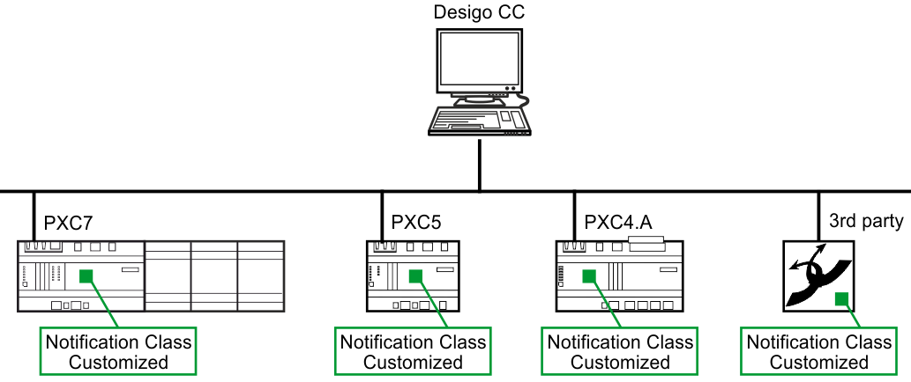
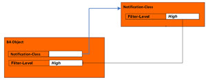
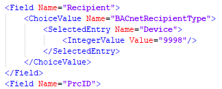
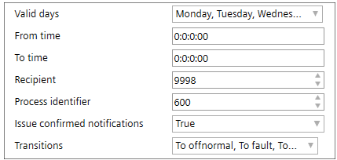
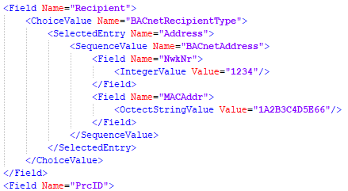
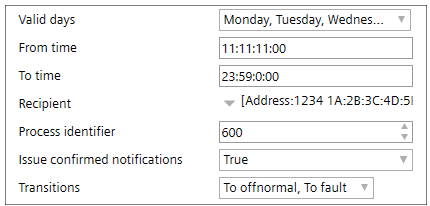
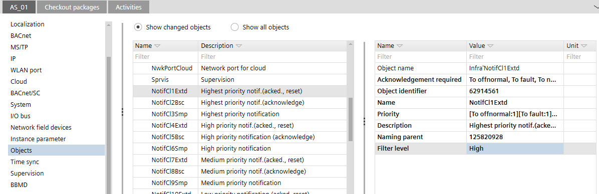

按通知类别进行警报管理
Intrinsic reporting
通过内在报告，报警对象本身承担报警识别和报警处理的状态机。然而，随后向报警客户端分发报警消息以及报警管理不再是报警源本身的责任，而是分配给报警源的通知类对象的责任。通知类对象既是一个功能块，又是一个标准 BACnet 对象，其中包含系统内分发警报和系统事件所需的所有信息。

在 ABT 站点中，通知类对象的信息由 XML 文件处理，并且在控制程序中不可见。如果标准行为与客户的要求不匹配，可以根据客户的需要修改通知类文件。
如果由于现场设备状态为“Device-Missing”而触发多个报警（执行报警喷发），则仅将“Device-Missing”报警发送给相应的接收者。这可确保用户不会收到且必须确认多个警报。
Algorithmic reporting
通过算法报告，警报检测和用于警报处理的状态机通常由具有警报功能的 BACnet 对象或事件注册对象接管。在这种情况下，警报管理也是通过分配的通知类对象在警报源中设置的。
Notification Class

每个警报生成对象仅分配一个通知类别[NotifCl]，但一个通知类别可以被多个警报生成对象使用。这使得为每组警报（例如，HVAC警报、火警等）创建一个通知类对象成为可能。给定报警组中的每个报警源都分配给该组的 [NotifCl]。
有全局和本地通知类对象：
- Global notification class: One set of max. 18 global notification class objects per site.
- Global notification classes exist on all Desigo devices of a site.
Notification classes template in the project
Replace a notification class template of a device
Verifying the notification classes in an existing device
Notification Classes in the Desigo system
有 18 个预定义的全局通知类别。通知类由两个自变量 AlarmFunction 和 AlarmClass 标识，并在警报源中引用：
- AlarmFunction [Simple(1), Basic(2), Extended Alarm(3)]
- AlarmClass [UrgentAlarm (1), HighPrioAlarm (2), NormalAlarm (3), LowPrioAlarm (4), UserDefinedAlarm (5) and OffLineTrend (6)]
报警等级1 [AlmCl] | 报警子类2 [AlmFnct] | 默认属性值 | ||||
|---|---|---|---|---|---|---|
优先事项3 | NC | 确认。要求。 | ||||
1 | 紧迫的 | 3 | 扩展 | 1,1,5 | 1 | T,T,T |
1 | 紧迫的 | 2 | 基本的 | 1,1,5 | 2 | 时间,时间,F |
1 | 紧迫的 | 1 | 简单的 | 1,1,5 | 3 | 氟、氟、氟 |
2 | 高优先级 | 3 | 扩展 | 2,2,6 | 4 | T,T,T |
2 | 高优先级 | 2 | 基本的 | 2,2,6 | 5 | 时间,时间,F |
2 | 高优先级 | 1 | 简单的 | 2,2,6 | 6 | 氟、氟、氟 |
3 | 普通的 | 3 | 扩展 | 3,3,7 | 7 | T,T,T |
3 | 普通的 | 2 | 基本的 | 3,3,7 | 8 | 时间,时间,F |
3 | 普通的 | 1 | 简单的 | 3,3,7 | 9 | 氟、氟、氟 |
4 | 低优先级 | 3 | 扩展 | 4,4,8 | 10 | T,T,T |
4 | 低优先级 | 2 | 基本的 | 4,4,8 | 11 | 时间,时间,F |
4 | 低优先级 | 1 | 简单的 | 4,4,8 | 12 | 氟、氟、氟 |
5 | 用户定义 | 3 | 扩展 | 5,5,9 | 13 | T,T,T |
5 | 用户定义 | 2 | 基本的 | 5,5,9 | 14 | 时间,时间,F |
5 | 用户定义 | 1 | 简单的 | 5,5,9 | 15 | 氟、氟、氟 |
6 | 线下趋势 | 3 | 扩展 | 2,2,2 | 16 | T,T,T |
6 | 线下趋势 | 2 | 基本的 | 2,2,2 | 17 | 时间,时间,F |
6 | 线下趋势 | 1 | 简单的 | 2,2,2 | 18 | 氟、氟、氟 |
1FB variable
2FB 变量 AlmFnct
3FB 变量优先级（至异常、至故障、至正常）
T = 真
F = 假
Notification Class in a building environment
在较大的建筑物或校园中，您必须集成包含不同通知类别的不同设备。为了确保来自不同设备的警报被转发到管理站，ABT站点可以选择将它们单独分配给设备。在新的或现有的项目中，使用默认设置，然后可以针对相应的设备进行调整。因此，可以支持KBOB和AMEV的要求。
Project situation wrong:
一个项目中不允许有不同的通知类配置文件。所有通知类别配置文件必须具有相同的通知类别分配。

Project situation correct:
在项目中，所有通知类必须具有相同的分配。这必须适用于项目中集成的第三个设备。

Location of the stored notification class files
通知类功能块 [NotifCl] 是将功能从 BACnet 标准传输到编程环境的方法。总部模板文件 Desigo、KBOB 和 AMEV 位于此处：C:\ProgramData\Siemens\Desigo\ABT\Libraries\HQ\NotificationClasses.
来自地区总部的通知类别给出并存储在以下位置：
C:\ProgramData\Siemens\Desigo\ABT\Libraries\RC\NotificationClasses.
Interface definition in the notification class file
有效的通知类模板必须在以下定义中具有唯一的条目：
- 通知类别编号 (7)
- 实例编号 (2)
- 零件名称 (3)
文件在导入过程中进行验证。错误消息及其原因显示在Log选项卡。
Importing customized notification classes into the project
通知类示例XML文件。
Notification class | |||
1 | Notification class name 不要改变 | 2 | Notification class instance number 文件内必须是唯一的。 |
3 | Custom alarm class 显示警报类别值行为。如果删除 4 中的 TextRef，则显示文本。 (PartName数据范围：0 – 80) | 4 | System data alarm class 指标准系统数据。在自定义文件中，删除此条目以显示 3 中的文本。 |
5 | Custom alarm class description Displays the alarm class description. Shows the text if the TextRef in 6 is deleted. (Des数据范围：0 – 255) | 6 | System data alarm class description 指系统数据。在自定义文件中，删除此条目以显示 5 中的文本。 |
7 | Notification class number 通知类编号可以与通知类实例编号不同。 (NotifCl数据范围：0 - 2097152) | 8 | Alarm priority 定义警报类别的优先级。 (Prio数据范围Index: 0 - 2) (Prio数据范围Value：任何值） |
9 | Alarm priority 定义警报类别的优先级。 (Prio数据范围Value：任何值） | 10 | Alarm priority 定义警报类别的优先级。 (Prio数据范围Value：任何值） |
11 | Acknowledge 定义确认行为。 （数据范围Value: true/false) | 12 | Filter level 过滤级别在通知类对象中配置，并作为状态聚合的状态值反映在 BA 对象的警报扩展中。 （数据范围FiltrLvl：0 = 低，1 = 中，2 = 高）  |
Recipient list within the Notification class
该目的地列表包含预配置的警报接收者以及操作警报接收者的工作日和时间范围。
Part of reception list only | |||
1 | Valid days 在值“起始时间”(FromTi) 和“终止时间”(ToTi) 期间使用此目的地的一周中的天数。 0 = Monday （数据范围Value: true/false) | 2 | From time 定义将事件转发给收件人的开始时间。 |
3 | To time 定义事件转发给收件人之前的结束时间。 | 4 | BACnet recipient type 事件通知客户端设备的标识符。可以定义为：device ID (Device)   or 网络号（NwkNr) 和 MAC 地址 (MACAddress)   |
5 | Process identifier 警报通知客户端使用的数字标识符，用于将事件路由到内部任务、进程、应用程序等。 | 6 | Confirmed notifications 警报应作为已确认或未确认的通知发送给该客户端。 （数据范围Value: true/false) |
7 | Transitions 与该客户端相关的警报状态转换。作为一组三个标志实现；为每个状态转换（到正常、到故障、到非正常）提供一个标志。 0 = To-Offnormal （数据范围Value: true/false) |
|
|
Configuring the recipient list
 CAUTION
CAUTION

警报不再转发
主管人员没有得到通知，因此无法采取适当的措施。
- This adjustment may only be carried out by trained personnel.
- After a change, always check all notification classes for functionality.
- Changes may only be made to the properties listed below. Labels must not be changed.
如果通知类名称相同，则会显示错误日志消息。报到：
- ABT 站点：在Engineering选项卡，打开BACnet objects任务并单击Check.
- ABT Pro: ClickApply notification class在Room programming编辑。
Priority [Prio]
这定义了将警报和系统事件传输到接收器的警报优先级。每个转换都可以使用 BACnet 属性、数据类型 ARRAY of INTEGERS [TO_OFFNORMAL; TO_FAULT； TO_NORMAL]。优先级的值范围为 0 到 255。
值越低，优先级越高。在 Desigo 中仅使用优先级 1 至 9。
Alarm function [AlmFnct]
报警功能类型：简单、基本或扩展。 [AlmFnct] 仅受 Desigo 设备支持。
Acknowledge transition per filter level for state aggregation
每个过滤器级别的确认转换指示器包括：
- High-Acked-ToNormal
- High-Acked-ToOffNormal
- High-Acked-ToFault
- Medium-Acked-ToNormal
- Medium-Acked-ToOffNormal
- Medium-Acked-ToFault
- Low-Acked-ToNormal
- Low-Acked-ToOffNormal
- Low-Acked-ToFault
由于第 3 方对象没有关联的过滤器级别，因此它们被视为低级别。这可以通过使用参考对象进行集成来改变。
